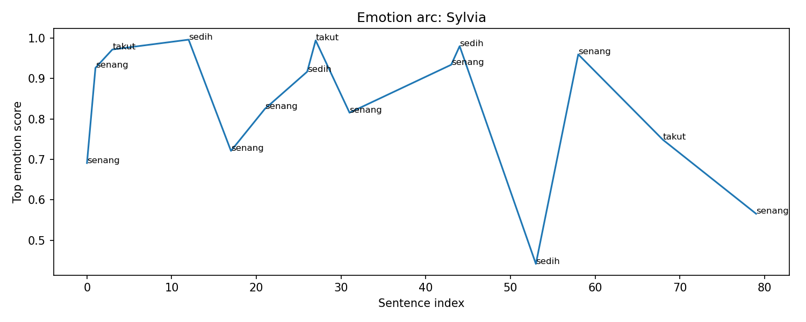

Overall Chapter Summary
Langkah perjalanan Wira dan Sylvia terhenti saat menuju Gunung Bromo, di mana mereka berencana untuk upgrade mount di kota Suradikarta sebelum berburu World Boss.
Chapter Drift Analysis
Similarity: 0.8629
Drift: 0.1371
Low drift. The chapter remains semantically close to the early story baseline.
Bug Severity Distribution
Story Bugs Found
Event ID ev_001_001 appears with different summaries.
Meaning: The same event ID ev_001_001
is used for different narrative moments.
Earlier version: Wira selects the quest to climb Gunung Bromo and acquires a mount named Osmo.
New version: Wira dan Sylvia memutuskan untuk menuju kota Suradikarta.
Why it matters: duplicated event IDs can corrupt causality, item ownership, memory tracking, and location tracking.
Wira appears in two locations at the same story step.
Meaning: This indicates spatial continuity risk. A character may appear in conflicting places at the same story step.
Sylvia appears in two locations at the same story step.
Meaning: This indicates spatial continuity risk. A character may appear in conflicting places at the same story step.
Osmo moves from Ahol to Wira without explicit loss/give event.
Meaning: This indicates item continuity risk. A character may be using, owning, or transferring an item without proper setup.
Osmo moves from Ahol to Sylvia without explicit loss/give event.
Meaning: This indicates item continuity risk. A character may be using, owning, or transferring an item without proper setup.
Wira appears in two locations at the same story step.
Meaning: This indicates spatial continuity risk. A character may appear in conflicting places at the same story step.
Sylvia appears in two locations at the same story step.
Meaning: This indicates spatial continuity risk. A character may appear in conflicting places at the same story step.
Wira uses Potion LUK UP before acquiring it.
Meaning: This indicates item continuity risk. A character may be using, owning, or transferring an item without proper setup.
Sylvia uses Potion LUK UP before acquiring it.
Meaning: This indicates item continuity risk. A character may be using, owning, or transferring an item without proper setup.
Character Arc Analysis
Buto Kalong

Emotional Arc Summary
Buto Kalong's emotional journey in this chapter shifts from sadness to joy. Initially, there’s a sense of sadness linked to the notion of hunting the World Boss due to its challenges. However, excitement peaks when details about Buto Kalong are shared, particularly its rarity and the time limit for the battle.
Action-Based Interpretation
In the chapter, Wira and Sylvia prepare to face Buto Kalong. The emotions correlate with their actions—starting with sadness as they brace for a tough fight, transitioning to joy and excitement upon recognizing the unique aspects of Buto Kalong, which energizes their preparations.
Key Turning Point
The emotional shift is most pronounced when Wira discovers that Buto Kalong appears only during a full moon. This revelation transforms their apprehension into joy, motivating their readiness for the battle.
Narrative Meaning
This emotional arc emphasizes the theme of facing fears and obstacles while celebrating moments of excitement and opportunity, contributing to character development.
Potential Writing Issue
The initial sadness feels slightly disconnected from the subsequent joy; further contextual details around their emotional struggles could enhance coherence.
WiraMadha

Emotional Arc Summary
WiraMadha experiences a range of emotions throughout the chapter, starting with happiness as he journeys with Sylvia. However, emotional shifts occur as he recognizes Sylvia’s shortcomings and becomes increasingly concerned, culminating in sadness when he purchases gear for her. Despite these darker feelings, moments of joy and surprise punctuate his actions.
Action-Based Interpretation
WiraMadha's upbeat demeanor is evident when he laughs and assures Sylvia. Yet, his actions also reveal his deeper feelings; he immediately takes Sylvia to a premium mount shop, indicating his worry about her performance. This inconsistency between his outward cheer and inward concern highlights his complex emotional state.
Key Turning Point
The key turning point occurs when Wira decides to buy expensive equipment for Sylvia. This reveals his deep care but also introduces a sense of sadness as it underscores his awareness of her limitations.
Narrative Meaning
The emotional rollercoaster emphasizes the theme of support and sacrifice in relationships, as Wira manages both joy in shared experiences and concern for Sylvia’s capabilities.
Potential Writing Issue
The emotional fluctuations may feel inconsistent at times, especially when Wira's sadness does not always align with immediate narrative actions, which could confuse readers about his true feelings.
Osmo

Emotional Arc Summary
Osmo's emotional journey in this chapter fluctuates between joy and sadness. Initially, he feels excited about his mount's speed compared to Sylvia's, showcasing a sense of pride and confidence. However, this joy shifts to sadness when he makes a poignant purchase, indicating a deeper emotional conflict.
Action-Based Interpretation
Despite the absence of overt actions from Wira, the decisions made reflect Osmo's emotional state. The excitement he feels suggests an affinity for competition and success in the adventure they are undertaking. However, the act of buying the emerald Osmo mount carries a weight of solemnity, hinting at a personal sacrifice or a deeper connection with the mount that evokes sadness.
Key Turning Point
The key turning point occurs when Osmo transitions from a state of joy to sadness after the purchase, revealing his inner conflict. This shift suggests a moment of reflection that contrasts the earlier playful competition.
Narrative Meaning
This arc highlights the complexity of emotions in adventuring characters, illustrating how victories can be bittersweet. It suggests themes of companionship and personal sacrifice.
Potential Writing Issue
The emotional drop to sadness may seem abrupt without further context or support from preceding events, leading to potential inconsistency in character development.
Sylvia

Emotional Arc Summary
Sylvia experiences a fluctuating emotional journey throughout the chapter. Initially feeling happy as their journey progresses, her emotions shift to sadness and fear when confronted with her inferior mount and the uncertainty of Wira's unexpected generosity.
Action-Based Interpretation
Sylvia's initial excitement about the trip turns to sadness when she realizes her mount is lacking. Wira's act of purchasing new gear for her elicits surprise and gratitude, but she also feels apprehensive about their new relationship and what it implies. This blend of feelings highlights her vulnerability.
Key Turning Point
The pivotal moment occurs when Wira buys Sylvia new equipment, moving her from sadness to surprise, mingled with a lingering fear about their connection. This action reflects a shift towards a deeper bond but challenges her comfort with such sudden generosity.
Narrative Meaning
This chapter emphasizes themes of friendship and the complexities of trust, showcasing Sylvia's insecurities against Wira's supportive gestures, intensifying their character dynamic.
Potential Writing Issue
There are moments where emotional changes, such as sudden fear or sadness, do not align completely with character actions, indicating a possible inconsistency that could benefit from additional development to reinforce emotional grounding.
Event Timeline
Lore Graph
Nodes represent characters, scenes, events, items, facts, and locations.